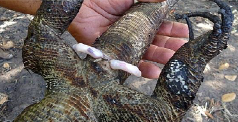
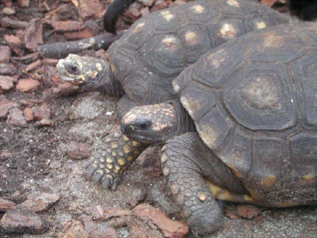
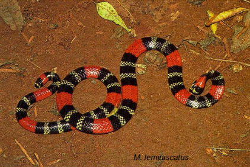
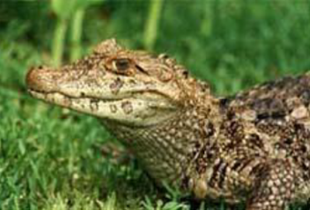
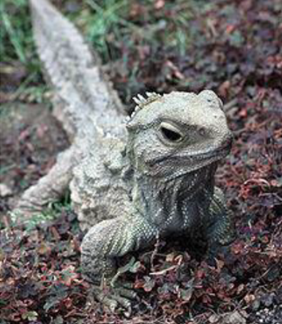

Répteis
Estudo dos répteis
Os répteis foram os primeiros vertebrados que conquistaram o ambiente terrestre de forma independente.
São organismos ectotérmicos, ou seja, dependem de uma fonte externa de calor para regularem sua temperatura corporal. Por isso no verão encontramos com mais facilidade cobras e lagartos, eles estão em busca de locais frescos para amenizar sua temperatura.
Possuem termorregulação corporal.
Quais as vantagens da ectotermia? Precisam de menos alimento e possuem menores custos energéticos para o crescimento.
Os répteis foram os primeiros organismos com ovos terrestres. Ovos com âmnio é uma semelhança entre aves, répteis e mamíferos.
Fecundação interna.
Todos os répteis colocam seus ovos na terra.
Algumas espécies de répteis possuem um órgão copulador chamado hemipenis. Segue abaixo uma imagem.

Atualmente existem 4 grupos de répteis:
Testudines

Squamatas

Crocodialianos

Rhynchocephalia (uma única espécie).
